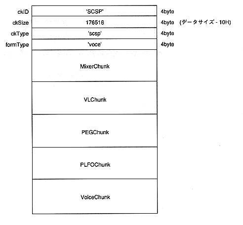

First, “SCSP” as an ID contains 4 bytes in ASCII code, and after that, the total bytes of MixerChunk and VoiceChunk are 4 bytes in long.
After that, “voce” as Type is 4 bytes in ASCII code.
After that, MixerChunk and VoiceChunk data are included.